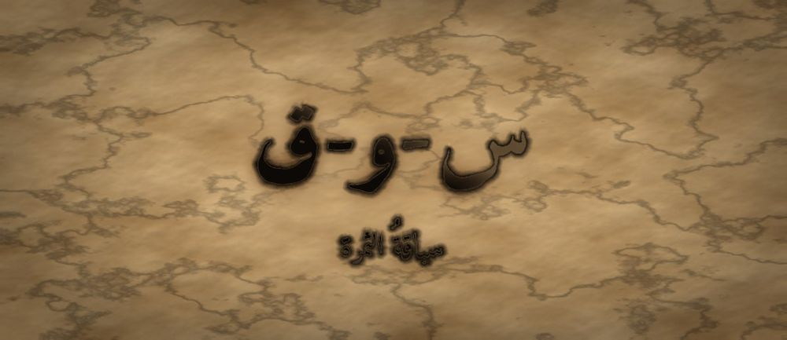

مَطبعةُ جُذور · دبي · MCMXXVI · سِلْسِلَةُ فَنِّ البَيان

مَرحلةُ الثِّمَار · الفئة ١٦–١٨ · الجذر س-و-ق · صلاح الدين
❦ ✦ ❧
السِّفْرُ ١٨ — سياقةُ الثمرة
«أَسُوقُ الْكَلَامَ كَمَا يَسُوقُ الرَّاعِي قَطِيعَهُ: بِرِفْقٍ، وَإِلَى مَاءٍ»

الرِّسَالَةُ الجَوْهَرِيَّة
أَنْ تَسُوقَ لَيْسَ أَنْ تَدْفَعَ، بَلْ أَنْ تَعْرِفَ الطَّرِيقَ وَتَمْشِيَ فِي أَوَّلِهِ. السِّيَاقَةُ تَرْتِيبُ الْكَلَامِ فِي وِجْهَةٍ وَاحِدَةٍ، حَتَّى يَصِلَ السَّامِعُ إِلَى الْمَعْنَى وَهُوَ يَظُنُّ أَنَّهُ وَصَلَ بِنَفْسِهِ. وَمَنْ عَجِلَ بِقَطِيعِهِ بَدَّدَهُ، وَمَنْ سَاقَهُ بِرِفْقٍ أَوْرَدَهُ.
بِطَاقَةُ هُوِيَّةِ السِّفْر
| المستوى / الدرجة | الثِّمَار — ثَمَرَةٌ تُقْطَفُ (الدرجةُ العليا في مستوى الثِّمار) |
| الفئة العمرية | ١٦–١٨ سنة · نطاقُ تداخُلٍ يمتدُّ إلى ١٩ للمتعلّمِ المتقدّم |
| الجذر الأساسي | س – و – ق · السِّيَاقَةُ: أنْ تَقُودَ الْمَعْنَى إِلَى غَايَتِهِ |
| أسرة الجذر | سَاقَ · سِيَاقَة · سَائِق · مَسَاق · سِيَاق · اِنْسِيَاق (كلُّها من س-و-ق) |
| المحطّة | السِّيَاقَةُ — تَرْتِيبُ الْقَوْلِ فِي وِجْهَةٍ وَاحِدَةٍ |
| المرساة الحسّيّة | رسمُ خطٍّ بالإصبعِ على الطاولةِ من نقطةِ البدءِ إلى نقطةِ الوصولِ أثناءَ الكلامِ |
| الاستعارة | الثمرةُ التي نضجتْ لا تسقطُ حيثُ اتّفقَ، بل تُوجَّهُ إلى تربةٍ تنفعُها |
| الشخصيتان الحكيمتان | صلاحُ الدينِ الأيّوبيُّ (سائسُ الجموعِ) + الجَدّةُ رملة |
| الشخصية الرمزيّة | نورُ الثمرةِ (نفسُها منذُ السفرِ الأوّلِ — تنضجُ) |
| الشخصية المضادّة | الرِّيحُ الْمُتَعَجِّلَةُ — شخصيّةٌ رمزيّةٌ (لا تاريخيّةٌ) تدفعُ بِلا وِجهةٍ، وتتعلّمُ الاتّجاهَ |
| مؤشّر الرصد الوصفيّ | يُرتّبُ ثلاثَ جُمَلٍ في تسلسلٍ يخدمُ غايةً واحدةً، ويُسمّي غايتَهُ إنْ سُئِلَ |
| مجال CASEL | اتّخاذُ القرارِ المسؤولُ (Responsible Decision-Making) |
| الإسناد المرجعيّ | استرشادًا بمستوياتِ التعبيرِ المتقدّمِ · استرشادًا بأدبيّاتِ الخطابِ الحِجاجيِّ |
| المرجعُ النظريّ | TRT — نَظَرِيَّةُ القراءةِ الملموسةِ |
صَاحِبُ السِّفْرِ مِنَ التُّرَاث
صلاحُ الدينِ الأيّوبيُّ قائدٌ عاشَ في القرنِ السادسِ الهجريِّ، اشتُهِرَ بتوحيدِ جبهاتٍ متفرّقةٍ وبِحِلمِهِ مع مخالفيهِ حتّى في ذروةِ الخصومةِ. عُرِفَ عنه أنّه كان يُقنِعُ قبلَ أن يأمرَ، ويرتّبُ خطواتِه على غايةٍ بعيدةٍ لا على انفعالِ اليومِ. نستلهمُ منه هنا: سياقةَ الناسِ والكلامِ برفقٍ نحو وِجهةٍ واضحةٍ.
الشَّخْصِيَّةُ المُضَادَّة — الرِّيحُ الْمُتَعَجِّلَةُ — رمزٌ للاندفاعِ بِلا وِجهةٍ؛ تدفعُ كلَّ شيءٍ بقوّةٍ ثمَّ تنسى إلى أينَ. تتعلّمُ في النهايةِ أنَّ القوّةَ بِلا اتّجاهٍ تبديدٌ، فتختارُ وِجهةً واحدةً وتهدأُ عليها.
الجَذْرُ وَأُسْرَتُه
س-و-ق — سَاقَ · سِيَاقَة · سَائِق · مَسَاق · سِيَاق · اِنْسِيَاق
الجذرُ (س-و-ق) أجوفُ واويٌّ: تُقلَبُ واوُهُ ألفًا في الماضي «سَاقَ»، وتعودُ ياءً في المصدرِ «سِيَاقَة» لانكسارِ ما قبلَها. ولاحِظِ الفرقَ الدلاليَّ بين «سِيَاق» (البيئةُ التي يردُ فيها الكلامُ) و«سِيَاقَة» (فعلُ القيادةِ نفسِه) — وكلاهما من معنى التوجيهِ نحوَ غايةٍ.
القِصَّةُ الكَامِلَة
المشهد ١ — نورُ تملكُ حُجَجًا كثيرةً بِلا طريقٍ
وَقَفَتْ نُورُ أَمَامَ حَلْقَةِ رِفَاقِهَا، وَفِي يَدِهَا وَرَقَةٌ مُمْتَلِئَةٌ بِالْحُجَجِ. كَانَتْ قَدْ تَعَلَّمَتْ فِي الْأَسْفَارِ الْمَاضِيَةِ أَنْ تُقْنِعَ، وَأَنْ تُبْرِزَ نَبْرَهَا، فَظَنَّتْ أَنَّ الْبَقِيَّةَ سَهْلَةٌ. بَدَأَتْ تَتَكَلَّمُ: ذَكَرَتْ فِكْرَةً، ثُمَّ قَفَزَتْ إِلَى أُخْرَى، ثُمَّ عَادَتْ إِلَى الْأُولَى، ثُمَّ أَضَافَتْ ثَالِثَةً لَمْ يَطْلُبْهَا أَحَدٌ. وَكَانَ كُلُّ مَا قَالَتْهُ صَحِيحًا، وَلَكِنَّ أَحَدًا لَمْ يَعْرِفْ إِلَى أَيْنَ تَذْهَبُ. رَأَتْ عُيُونَ رِفَاقِهَا تَتَفَرَّقُ كَمَا يَتَفَرَّقُ قَطِيعٌ بِلَا رَاعٍ. جَلَسَتْ وَهِيَ تَقُولُ فِي نَفْسِهَا: «مَعِي كُلُّ الْمَاءِ، وَلَكِنِّي لَا أَعْرِفُ أَيْنَ الْبِئْرُ.» وَنَظَرَتْ إِلَى وَرَقَتِهَا الْمُمْتَلِئَةِ فَإِذَا هِيَ كَقَطِيعٍ سَائِبٍ: كُلُّ شَاةٍ تَمْشِي فِي جِهَةٍ. فَعَرَفَتْ أَنَّ كَثْرَةَ الْحُجَجِ لَيْسَتْ قُوَّةً إِذَا لَمْ يَكُنْ لَهَا رَاعٍ يَعْرِفُ الْمَاءَ، وَأَنَّ الَّذِي يَنْقُصُهَا لَيْسَ عِلْمًا جَدِيدًا، بَلْ طَرِيقًا وَاحِدًا تَمْشِي فِيهِ كَلِمَاتُهَا.
المشهد ٢ — الرِّيحُ المتعجّلةُ تدفعُ ولا تصلُ
هَبَّتِ الرِّيحُ الْمُتَعَجِّلَةُ عَلَى الْحَلْقَةِ فَبَعْثَرَتِ الْأَوْرَاقَ، وَقَالَتْ فِي زَهْوٍ: «لَا تَتَرَدَّدِي يَا نُورُ! ادْفَعِي كَلَامَكِ دَفْعًا، وَمَنْ لَمْ يَلْحَقْ بِكِ فَلْيَتَأَخَّرْ. أَنَا أُحَرِّكُ الرَّمْلَ وَالشَّجَرَ وَالسُّحُبَ فِي لَحْظَةٍ!» سَأَلَتْهَا نُورُ بِهُدُوءٍ: «وَإِلَى أَيْنَ تَذْهَبِينَ بِكُلِّ هَذَا؟» تَوَقَّفَتِ الرِّيحُ قَلِيلًا، ثُمَّ قَالَتْ بِصَوْتٍ أَقَلَّ ثِقَةً: «لَا أَدْرِي... أَنَا أَدْفَعُ فَقَطْ.» فَتَذَكَّرَتْ نُورُ كَلَامَهَا هِيَ قَبْلَ قَلِيلٍ، وَاحْمَرَّ وَجْهُهَا. كَانَتْ تَفْعَلُ بِالْكَلَامِ مَا تَفْعَلُهُ الرِّيحُ بِالرَّمْلِ: حَرَكَةٌ كَثِيرَةٌ، وَوُصُولٌ قَلِيلٌ. وَظَلَّتِ الرِّيحُ تَدُورُ حَوْلَ نَفْسِهَا وَهِيَ تَحْسَبُ أَنَّهَا تَتَقَدَّمُ، وَكُلَّمَا مَرَّتْ بِمَكَانٍ تَرَكَتْهُ أَشْعَثَ. وَفَهِمَتْ نُورُ يَوْمَئِذٍ دَرْسًا لَمْ يَقُلْهُ لَهَا أَحَدٌ: أَنَّ الَّذِي يَتَكَلَّمُ بِلَا غَايَةٍ يُتْعِبُ سَامِعَهُ وَيُتْعِبُ نَفْسَهُ، وَيَظُنُّ الِاثْنَانِ أَنَّ الْمُشْكِلَةَ فِي الْآخَرِ.
المشهد ٣ — الجَدّةُ رملةُ ترسمُ الطريقَ بإصبعِها
مَدَّتِ الْجَدَّةُ رَمْلَةُ إِصْبَعَهَا عَلَى الطَّاوِلَةِ وَرَسَمَتْ خَطًّا بَطِيئًا مِنْ طَرَفٍ إِلَى طَرَفٍ، وَقَالَتْ: «يَا نُورُ، لِكُلِّ كَلَامٍ نُقْطَةُ بَدْءٍ وَنُقْطَةُ وُصُولٍ. ضَعِي إِصْبَعَكِ هُنَا، وَقُولِي: مِنْ أَيْنَ أَبْدَأُ؟ ثُمَّ حَرِّكِيهِ إِلَى هُنَا، وَقُولِي: إِلَى أَيْنَ أَنْتَهِي؟ كُلُّ جُمْلَةٍ لَا تُقَرِّبُكِ مِنَ الطَّرَفِ الثَّانِي فَهِيَ حَجَرٌ فِي الطَّرِيقِ لَا زَادٌ فِيهِ.» فَعَلَتْ نُورُ ذَلِكَ، فَشَعَرَتْ بِشَيْءٍ غَرِيبٍ: أَنَّ يَدَهَا صَارَتْ تَعْرِفُ مَا لَمْ يَعْرِفْهُ لِسَانُهَا. قَالَتْ: «إِذَنْ أَنَا لَا أَجْمَعُ الْكَلَامَ، بَلْ أَصُفُّهُ.» فَابْتَسَمَتِ الْجَدَّةُ: «بَلْ تَسُوقِينَهُ.» ثُمَّ قَالَتِ الْجَدَّةُ: «وَاعْلَمِي أَنَّ الطَّرِيقَ لَا يَطُولُ بِكَثْرَةِ الْخُطُوَاتِ، بَلْ بِكَثْرَةِ الِالْتِفَاتِ.» فَأَعَادَتْ نُورُ رَسْمَ الْخَطِّ ثَلَاثَ مَرَّاتٍ، وَفِي كُلِّ مَرَّةٍ تَحْذِفُ جُمْلَةً صَحِيحَةً لِأَنَّهَا لَا تُقَرِّبُهَا مِنَ الطَّرَفِ الْآخَرِ. وَكَانَ الْحَذْفُ أَصْعَبَ عَلَيْهَا مِنَ الْكَلَامِ كُلِّهِ.
المشهد ٤ — صلاحُ الدينِ يُعلِّمُها الوِجهةَ الواحدةَ
جَاءَ صَلَاحُ الدِّينِ وَجَلَسَ عَلَى الْأَرْضِ كَوَاحِدٍ مِنَ الْحَلْقَةِ، وَقَالَ: «يَا نُورُ، سُقْتُ يَوْمًا جُيُوشًا مِنْ بِلَادٍ شَتَّى، أَلْسِنَتُهَا مُخْتَلِفَةٌ وَقُلُوبُهَا مُتَبَاعِدَةٌ. وَمَا جَمَعْتُهَا بِالصِّيَاحِ، بَلْ بِأَنْ جَعَلْتُ لَهَا وِجْهَةً وَاحِدَةً تَرَاهَا كُلُّ عَيْنٍ. وَالسَّائِقُ الْحَاذِقُ يَمْشِي فِي أَوَّلِ الْقَطِيعِ لَا خَلْفَهُ بِالسَّوْطِ.» ثُمَّ أَضَافَ: «وَثَلَاثٌ تَحْفَظُ الطَّرِيقَ: أَنْ تَعْرِفَ غَايَتَكِ قَبْلَ أَنْ تَفْتَحِي فَمَكِ، وَأَنْ تَخْتَارِي أَقْصَرَ الْحُجَجِ إِلَيْهَا، وَأَنْ تَتْرُكِي لِلسَّامِعِ آخِرَ خُطْوَةٍ يَخْطُوهَا بِنَفْسِهِ.» كَتَبَتْ نُورُ الثَّلَاثَ عَلَى ظَهْرِ وَرَقَتِهَا الْمُبَعْثَرَةِ. ثُمَّ قَالَ وَهُوَ يَقُومُ: «وَإِيَّاكِ وَالسَّوْطَ، فَإِنَّ الْقَطِيعَ يَمْشِي خَلْفَ مَنْ يَثِقُ بِهِ لَا خَلْفَ مَنْ يَخَافُهُ. وَمَنْ سَاقَ النَّاسَ بِالْخَوْفِ وَصَلَ وَحْدَهُ.» فَكَتَبَتْ نُورُ هَذِهِ أَيْضًا، وَوَضَعَتْ تَحْتَهَا خَطَّيْنِ.
المشهد ٥ — نورُ تسوقُ كلامَها فيصلُ
عَادَتْ نُورُ إِلَى الْحَلْقَةِ وَقَدْ طَوَتْ وَرَقَتَهَا. قَالَتْ جُمْلَةً وَاحِدَةً فِي الْبَدْءِ: «أُرِيدُ أَنْ نَزْرَعَ فِنَاءَ الْمَدْرَسَةِ.» ثُمَّ سَاقَتْ ثَلَاثَ خُطُوَاتٍ فَقَطْ، كُلُّ خُطْوَةٍ تُمْسِكُ بِيَدِ الَّتِي قَبْلَهَا: الْفِنَاءُ فَارِغٌ، وَالْبُذُورُ عِنْدَنَا، وَالْمَاءُ قَرِيبٌ. ثُمَّ سَكَتَتْ وَتَرَكَتْ لَهُمُ الْخُطْوَةَ الْأَخِيرَةَ. فَقَالَ أَحَدُ رِفَاقِهَا مِنْ تِلْقَاءِ نَفْسِهِ: «إِذَنْ لِنَبْدَأْ غَدًا.» وَلَمْ تَقُلْ نُورُ: «هَذَا مَا أَرَدْتُهُ» — بَلِ ابْتَسَمَتْ فَقَطْ. فَقَدْ فَهِمَتْ أَنَّ السِّيَاقَةَ النَّاجِحَةَ هِيَ الَّتِي يَظُنُّ فِيهَا السَّائِرُ أَنَّهُ اخْتَارَ الطَّرِيقَ، وَهُوَ صَادِقٌ فِي ظَنِّهِ. وَنَظَرَتْ إِلَى وَرَقَتِهَا الْمَطْوِيَّةِ فِي جَيْبِهَا، وَفِيهَا عِشْرُونَ حُجَّةً لَمْ تَقُلْ مِنْهَا إِلَّا ثَلَاثًا. فَعَرَفَتْ أَنَّ الْبَلَاغَةَ لَيْسَتْ فِيمَا تَمْلِكُ، بَلْ فِيمَا تَخْتَارُ أَنْ تَتْرُكَهُ فِي جَيْبِكَ.
المشهد ٦ — الرِّيحُ تختارُ وِجهةً
بَقِيَتِ الرِّيحُ الْمُتَعَجِّلَةُ تَدُورُ حَوْلَ الْفِنَاءِ، ثُمَّ اقْتَرَبَتْ مِنْ نُورَ وَقَالَتْ: «رَأَيْتُكِ تَقُولِينَ كَلَامًا أَقَلَّ مِنْ كَلَامِي بِكَثِيرٍ، وَمَعَ ذَلِكَ تَحَرَّكَ النَّاسُ خَلْفَكِ وَلَمْ يَتَحَرَّكُوا خَلْفِي. لِمَاذَا؟» قَالَتْ نُورُ: «لِأَنَّكِ تَدْفَعِينَ، وَأَنَا أَدُلُّ. وَالدَّفْعُ يُتْعِبُ، وَالدَّلَالَةُ تُرِيحُ.» صَمَتَتِ الرِّيحُ طَوِيلًا — وَكَانَ صَمْتُهَا أَوَّلَ مَرَّةٍ. ثُمَّ هَبَّتْ هَبَّةً وَاحِدَةً هَادِئَةً فِي اتِّجَاهٍ وَاحِدٍ، فَحَمَلَتْ بُذُورَ الْفِنَاءِ إِلَى الْحَوْضِ الْمَحْرُوثِ. وَقَالَتْ وَهِيَ تَبْتَعِدُ: «الْيَوْمَ عَرَفْتُ إِلَى أَيْنَ أَذْهَبُ. وَمَنْ عَرَفَ وِجْهَتَهُ، لَمْ يَعُدْ مُحْتَاجًا أَنْ يَعْصِفَ.» وَبَقِيَتْ نُورُ تَنْظُرُ إِلَى الْحَوْضِ الْمَحْرُوثِ وَقَدِ اسْتَقَرَّتْ فِيهِ الْبُذُورُ، وَقَالَتْ فِي نَفْسِهَا: «مَا أَشْبَهَ الْكَلَامَ بِالْبَذْرِ! كِلَاهُمَا يَضِيعُ إِنْ نُثِرَ فِي كُلِّ مَكَانٍ، وَيُثْمِرُ إِنْ وُضِعَ فِي مَكَانٍ وَاحِدٍ.»
النُّسْخَةُ المُخْتَصَرَة
كَانَ عِنْدَ نُورَ كَلَامٌ كَثِيرٌ صَحِيحٌ، فَقَالَتْهُ كُلَّهُ دَفْعَةً وَاحِدَةً، فَتَفَرَّقَ عَنْهَا رِفَاقُهَا. جَاءَتِ الرِّيحُ الْمُتَعَجِّلَةُ وَقَالَتْ: «ادْفَعِي كَلَامَكِ دَفْعًا!» فَسَأَلَتْهَا نُورُ: «وَإِلَى أَيْنَ؟» فَلَمْ تَعْرِفِ الرِّيحُ جَوَابًا. رَسَمَتِ الْجَدَّةُ رَمْلَةُ خَطًّا بِإِصْبَعِهَا وَقَالَتْ: «مِنْ أَيْنَ تَبْدَئِينَ، وَإِلَى أَيْنَ تَصِلِينَ؟» وَقَالَ صَلَاحُ الدِّينِ: «اجْعَلِي لِكَلَامِكِ وِجْهَةً وَاحِدَةً، وَامْشِي فِي أَوَّلِهِ لَا خَلْفَهُ.» فَعَادَتْ نُورُ وَقَالَتْ ثَلَاثَ جُمَلٍ فَقَطْ، كُلُّ جُمْلَةٍ تُقَرِّبُ مِنَ الْغَايَةِ، ثُمَّ سَكَتَتْ. فَقَالَ رِفَاقُهَا: «لِنَبْدَأْ غَدًا!» وَتَعَلَّمَتِ الرِّيحُ أَنَّ الْقُوَّةَ بِلَا وِجْهَةٍ تَبْدِيدٌ، فَاخْتَارَتِ اتِّجَاهًا وَاحِدًا وَحَمَلَتِ الْبُذُورَ إِلَيْهِ. وَعَرَفَتْ نُورُ يَوْمَئِذٍ أَنَّ الْكَلَامَ كَالْبَذْرِ: يَضِيعُ إِنْ نُثِرَ فِي كُلِّ مَكَانٍ، وَيُثْمِرُ إِنْ وُضِعَ فِي مَوْضِعٍ وَاحِدٍ. وَبَقِيَتْ فِي جَيْبِهَا حُجَجٌ كَثِيرَةٌ لَمْ تَقُلْهَا، فَكَانَتْ تِلْكَ أَجْمَلَ مَا فَعَلَتْهُ. وَتَعَلَّمَتِ الرِّيحُ الْمُتَعَجِّلَةُ أَنَّ الْقُوَّةَ بِلَا وِجْهَةٍ تَبْدِيدٌ، فَهَبَّتْ هَبَّةً وَاحِدَةً هَادِئَةً وَحَمَلَتْ بُذُورَ الْفِنَاءِ إِلَى الْحَوْضِ الْمَحْرُوثِ، وَقَالَتْ وَهِيَ تَبْتَعِدُ: «مَنْ عَرَفَ وِجْهَتَهُ لَمْ يَعُدْ مُحْتَاجًا أَنْ يَعْصِفَ.»
المِرْسَاةُ الحِسِّيَّة
يَضَعُ الْمُتَعَلِّمُ سَبَّابَتَهُ عَلَى حَافَّةِ الطَّاوِلَةِ عِنْدَ نُقْطَةِ الْبَدْءِ، وَيَقُولُ غَايَتَهُ فِي جُمْلَةٍ. ثُمَّ يُحَرِّكُ إِصْبَعَهُ خُطْوَةً وَاحِدَةً مَعَ كُلِّ حُجَّةٍ، حَتَّى يَبْلُغَ الطَّرَفَ الْآخَرَ فَيَرْفَعَ يَدَهُ وَيَصْمُتَ. الْيَدُ هِيَ الَّتِي تُخْبِرُهُ أَنَّهُ وَصَلَ، فَلَا يَسْتَرْسِلُ بَعْدَ الْوُصُولِ. كُلُّ حَرَكَةٍ يُؤَدِّيهَا بِنَفْسِهِ.
العَنَاصِرُ الخَمْسَةُ لِلتَّطْبِيق
| المُخرَجُ اللُّغَويُّ | «أَسُوقُ كَلَامِي إِلَى غَايَةٍ وَاحِدَةٍ» — يقولُها المتعلّمُ قبلَ أيِّ عرضٍ، ثمَّ يُسمّي الغايةَ في جملةٍ واحدةٍ لا تزيدُ على عشرِ كلماتٍ. |
| الحركةُ الجسديّةُ | يرسمُ بإصبعِهِ خطًّا على الطاولةِ من يمينِها إلى يسارِها وهو يتكلّمُ: كلُّ جملةٍ خطوةٌ على الخطِّ. الحركةُ يؤدّيها المتعلّمُ بنفسِهِ. |
| الدفءُ العلائقيُّ | يسألُ سامعَهُ بعدَ العرضِ: «إلى أينَ وصلْنا معًا؟» — فإن اختلفَ جوابُهُ عن غايتِهِ أعادَ ترتيبَ الطريقِ لا رفعَ صوتَهُ. |
| البديلُ الحسّيُّ | ثلاثُ بطاقاتٍ تُوضَعُ على الطاولةِ بالترتيبِ (بدايةٌ · خطوةٌ · وصولٌ)؛ يُحرّكُها المتعلّمُ بيدِهِ بدلَ الخطِّ المرسومِ إن شقَّ عليه. |
| الجسرُ الإنجليزيُّ | «I lead my words to one destination.» — يُقالُ مرّةً بالعربيّةِ ومرّةً بالإنجليزيّةِ للحفاظِ على التوازنِ اللُّغَويِّ. |
دَلِيلُ الأَهْلِ وَالمُعَلِّم
| قبل الجلسة | ضعوا الأجهزةَ في صندوقٍ مغلقٍ، ثمَّ اتّفقوا على «غايةِ اليومِ» في جملةٍ واحدةٍ مكتوبةٍ على ورقةٍ صغيرةٍ تُوضَعُ في وسطِ الطاولةِ. لا تناقشوا التفاصيلَ قبلَ أن تُكتَبَ الغايةُ. |
| أثناء الجلسة | اسمعوا حتى النهايةِ دونَ مقاطعةٍ، ثمَّ اسألوا سؤالًا واحدًا: «أيُّ جملةٍ قرّبتْنا من الغايةِ، وأيُّها أبعدتْنا؟» لا تُقيّموا الأسلوبَ ولا تُصحّحوا النبرَ — الترتيبُ وحدَه هو موضوعُ اليومِ. |
| بعد الجلسة | خلالَ الأسبوعِ، العبوا لعبةَ «الطريقُ الثلاثيُّ»: يطلبُ أحدُكم شيئًا بثلاثِ جُمَلٍ فقط تنتهي إلى غايةٍ واحدةٍ. سجّلوا في مفكّرةٍ: كم مرّةً وصلَ الطلبُ من أوّلِ محاولةٍ؟ |
مُؤَشِّرَاتُ الرَّصْدِ الوَصْفِيَّة
| ما تُلاحِظُه | ماذا يعني |
|---|---|
| يُسمّي غايتَهُ قبلَ أن يبدأَ الكلامَ | بدأَ التخطيطُ يسبقُ اللسانَ — مؤشّرٌ وصفيٌّ على نضجِ التنظيمِ الخطابيِّ، يُرصَدُ ولا يُقاسُ به الانتقالُ. |
| يحذفُ جملةً صحيحةً لأنّها لا تخدمُ الغايةَ | قدرةٌ ناشئةٌ على تمييزِ الصوابِ من المفيدِ — وهي من أدقِّ علاماتِ السياقةِ. |
| يصمتُ بعدَ بلوغِ الغايةِ ولا يسترسلُ | وعيٌ بالوصولِ؛ يُلاحَظُ أنّ إطالةَ الكلامِ بعدَ الغايةِ تُضعِفُها. |
| يُعيدُ ترتيبَ حُجَجِهِ حينَ لا يصلُ السامعُ | مرونةٌ في المسارِ بدلَ رفعِ الصوتِ — إشارةٌ وصفيّةٌ إلى انتقالِ المسؤوليّةِ من السامعِ إلى المتكلّمِ. |
مُفْرَدَاتُ السِّفْر
| الكلمة | المعنى |
|---|---|
| سِيَاقَةٌ | أنْ تقودَ كلامَكَ خطوةً خطوةً إلى غايةٍ |
| مَسَاقٌ | الطريقُ الذي يمشي فيه الكلامُ |
| سِيَاقٌ | ما حولَ الكلمةِ من كلامٍ يُبيّنُ معناها |
| وِجْهَةٌ | الجهةُ التي تقصدُها وتمشي إليها |
| اِنْسِيَاقٌ | أنْ تمشيَ خلفَ غيرِكَ بِلا اختيارٍ |
| تَبْدِيدٌ | أنْ تُنفِقَ قوّتَكَ بِلا فائدةٍ |
الجِسْرُ الإِنْجْلِيزِيّ
| عربي | English |
|---|---|
| أَسُوقُ كَلَامِي | I lead my words |
| وِجْهَةٌ وَاحِدَةٌ | one destination |
| نُقْطَةُ الْبَدْءِ | the starting point |
| خُطْوَةٌ تُقَرِّبُ | a step that brings us closer |
| قُوَّةٌ بِلَا اتِّجَاهٍ | power without direction |
| أَتْرُكُ لَكَ آخِرَ خُطْوَةٍ | I leave the last step to you |
أَسْئِلَةُ الفَهْم
- لِمَاذَا تَفَرَّقَ رِفَاقُ نُورَ فِي أَوَّلِ مَرَّةٍ مَعَ أَنَّ كَلَامَهَا كَانَ صَحِيحًا؟ (تَذَكُّرٌ)
- مَا الْفَرْقُ بَيْنَ أَنْ تَدْفَعَ النَّاسَ وَأَنْ تَدُلَّهُمْ؟ (اِسْتِنْتَاجٌ)
- اِرْسُمْ بِإِصْبَعِكَ خَطًّا، وَقُلْ ثَلَاثَ جُمَلٍ تَصِلُ بِكَ إِلَى آخِرِ الْخَطِّ — أَيُّ جُمْلَةٍ كَانَتْ أَقْصَرَ طَرِيقًا؟ (سُؤَالٌ حِسِّيٌّ حَرَكِيٌّ)
- مَتَى تَرَكْتَ لِمَنْ يَسْمَعُكَ أَنْ يَخْطُوَ آخِرَ خُطْوَةٍ بِنَفْسِهِ؟ (رَبْطٌ شَخْصِيٌّ)
نَشَاطٌ وَوَسَائِط
| نشاطٌ فنّيّ | «خريطةُ الوصولِ»: يرسمُ المتعلّمُ طريقًا مُتعرِّجًا من نقطةِ بدءٍ إلى بئرٍ، ويكتبُ على كلِّ منعطفٍ جملةً واحدةً من حُجَجِهِ. ثمَّ يشطبُ كلَّ منعطفٍ لا يقرّبُهُ من البئرِ، ويرسمُ الطريقَ ثانيةً أقصرَ. |
| نشاطٌ تمثيليّ | «الراعي والقطيعُ»: متعلّمٌ يسوقُ فكرةً في ثلاثِ جُمَلٍ، وثلاثةٌ يمثّلونَ سامعينَ يتقدّمونَ خطوةً كلّما شعروا بالاقترابِ من الغايةِ، ويقفونَ إن ضاعَ الطريقُ. تُعادُ الجولةُ بأدوارٍ متبادلةٍ، ولا مقارنةَ بينَ الأداءَينِ. |
جِسْرُ الذَّاكِرَة
إلى الوراءِ — السفرُ السابعَ عشرَ («نبرُ الثمرةِ»): تعلَّمتَ أن تُبرِزَ المعنى بنبرِكَ، فصارَ صوتُكَ يُضيءُ الكلمةَ المهمّةَ. والآنَ تتعلّمُ أنَّ الإضاءةَ وحدَها لا تكفي إن لم يكنْ للضوءِ طريقٌ. إلى الأمامِ — السفرُ التاسعَ عشرَ («حكمةُ الحصادِ»): إذا عرفتَ كيفَ تسوقُ الكلامَ، بقيَ أن تعرفَ متى تسوقُهُ ومتى تُمسِكُ. وهناكَ تبدأُ الحكمةُ.
قَائِمَةُ التَّحَقُّق
- الجذرُ (س-و-ق) صحيحٌ صرفيًّا، وأسرتُهُ معروضةٌ بدقّةٍ، والفرقُ بين «سِيَاق» و«سِيَاقَة» مُبيَّنٌ — صفرُ أخطاءٍ صرفيّةٍ.
- المؤشّراتُ الأربعةُ وصفيّةٌ للرصدِ فقط، وليست بوّاباتٍ تمنعُ الانتقالَ إلى السفرِ التالي.
- صلاحُ الدينِ مُوثَّقٌ تاريخيًّا بهامشٍ قصيرٍ صحيحٍ، والرِّيحُ المتعجّلةُ موسومةٌ صراحةً كرمزيّةٍ لا تاريخيّةٍ، وتتحوّلُ ولا تُشيطَنُ.
- لا حبسَ نفَسٍ ولا إجهادَ صوتٍ في أيِّ نشاطٍ، وحدُّ اللمسِ محفوظٌ: كلُّ حركةٍ يؤدّيها المتعلّمُ بنفسِهِ.
- الإسنادُ المرجعيُّ مكتوبٌ بصيغةِ «استرشادًا بـ» فقط، ولا ادّعاءَ اعتمادٍ ولا مطابقةٍ لأيِّ إطارٍ، والتسميةُ TRT — نَظَرِيَّةُ القراءةِ الملموسةِ.
- التشكيلُ مدقّقٌ على كلِّ كلمةٍ في القصّةِ والنسخةِ المختصرةِ والطقوسِ، والنسختانِ (كاملةٌ/مختصرةٌ) تراعيانِ فروقَ الانتباهِ.

مَطبعةُ جُذور · دبي · MCMXXVI · صمّمه وطوّره د. عادل ف. عامر
Designed and developed by Dr. Adel F. Amer · Amer (2024) · CC BY-NC-SA 4.0
↤ عودةٌ إلى خِزانةِ الأسفار